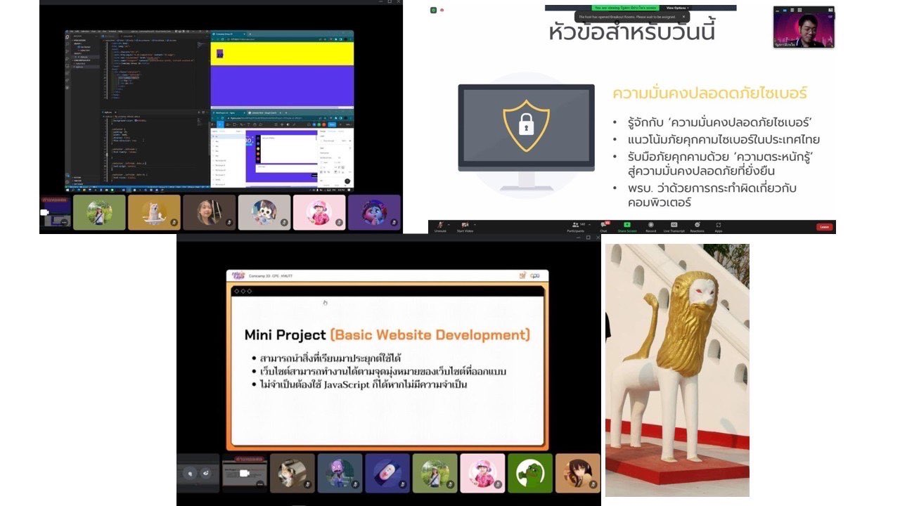

วันนี้ก็เป็นวันที่ 5 ที่ได้มาเข้าค่าย comcamp33 แล้วเนาะ เวลาผ่านไปเร็วมาก เมื่อวานยังนึกว่าเพิ่งสมัครไปเองอะ วันนี้ก็เริ่มค่ายมาด้วยการที่พี่วิทยากรมาบรรยายเกี่ยวกับ cyber security ว่าสิ่งนี้คืออะไร หมายความว่ายังไง การทำงานเป็นแบบไหน แถมยังได้รู้ข่าวสารที่เกิดทั้งในไทยแล้วก็ต่างประเทศอีก พี่วิทยากรเป็นกันเองมากๆ ได้รู้ถึงหลักพื้นฐาน CIA ซึ่งแบบเป็นหัวข้อที่น่าสนใจมาก พอฟังพี่เค้าบรรยายเสร็จก็ได้ไปพักเที่ยง พักจนถึงบ่ายโมงยี่สิบก็ได้มาเล่นกิจกรรมทายภาพที่เปิดแผ่นป้ายแล้วคือเพื่อนๆ ตอบกันเร็วมาก เพื่อนๆ มีทริคอย่างนึงคือจะยึดเอาเลขตรงกลางเป็นหลักซึ่งเป็นความคิดที่เจ๋งแจ๋วมาก เพราะบางทีเปิดไปก็เจอเลย บางทีอาจจะไม่เจอแต่เพื่อนๆ ก็สามารถตอบได้ แล้วตอบถูกด้วย แบบเปิดมาเจอแค่ท้องฟ้าก็ตอบถูกแล้วอะ งงตุ้บเลย พอตกเย็นพี่ๆ เค้าก็ได้มีการชี้แจงเกี่ยวกับมินิโปรเจคที่ต้องทำกัน เราก็เริ่มสุมหัวกันเลยค่ะทีนี้ มีเพื่อนคนนึงเสนอว่าจะทำไดอารี่ก็ไม่รีรอเลย เป็นความคิดที่ดีมาก ไม่ยากด้วย พอซักพักก็มีพี่ทีเอเข้ามาให้คำปรึกษาให้คำแนะนำซึ่งเพื่อนก็คือเก่งสุดยอดมากทำเสร็จไปแล้วหน้านึง ผมนี่ยากจะลุกขึ้นปรบมือให้ดังเลย หลังจากนั้นก็ได้คุยกับเพื่อนได้ปรึกษานู่นนั่นนี่กับพี่ๆ จนถึงสี่โมง เสร็จแล้วก็กลับมารวมกันอีกครั้งตอน 6 โมงครึ่ง ครั้งนี้ก็คือทำงานยาวไปจนถึงห้าทุ่มเลย ตาปรือมาก แต่ทุกคนก็คือสู้ชีวิตไม่ถอยเลย ก่อนจะทยอยขอตัวลากันไปนอนพักผ่อนเพื่อมาต่อสู้กันในวันพรุ่งนี้
